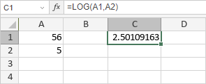

LOG funkcija
LOG funkcija je jedna od matematičkih i trigonometrijskih funkcija. Koristi se za vraćanje logaritma broja u zadatoj bazi.
Sintaksa
LOG(number, [base])
LOG funkcija ima sledeće argumente:
| Argument | Opis |
|---|---|
| number | Numerička vrednost za koju želite da dobijete logaritamsku vrednost. Mora biti veća od 0. |
| base | Baza koja se koristi za izračunavanje logaritma broja. Ovo je opcioni parametar. Ako se izostavi, funkcija podrazumevano koristi bazu 10. |
Napomene
Kako primeniti LOG funkciju.
Primeri
Slika ispod prikazuje rezultat koji vraća LOG funkcija.
